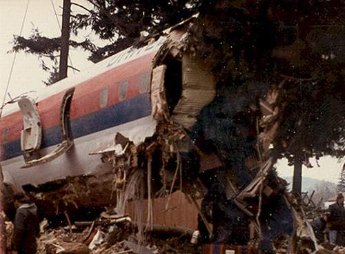

JSConf EU
United 173
28th December, 1978
17:10
Portland, Oregon
DC-8, Denver -> Portland, 189 souls
United 173
| 17:10 | Landing gear 'thump' |
| 17:12:20 | UA 173 to PDX: “We got a gear problem” |
| 18:13:50 | UA 173 to PDX: “Portland tower, United 173 heavy: Mayday, we're - the engines are flaming out, we're going down, we're not going to be able to make the airport!” |
| 18:14:25 | Impact with powerlines near NE 158th Avenue and E Burnside St |
United 173
Ten people die in the impact. 24 people are seriously injured.
Air Crashes
Hi, I'm Dave Cridland.
I've worked in and around the Internet since 1996.
I work for Surevine.
Air Crashes
| Aircraft | Software Systems | |
|---|---|---|
| Large systems of interacting components | Large systems of interacting components | |
| Failure cases are: | Complex error chains | Complex cascade failures |
| Serious failures: | “Crashes” | “Crashes” |
| When failure occurs: | Specialist investigators | Turn off and on again |
Air Crashes
I'm not scared of flying.
Only two accident reports really scare me.
Terms
- PIC
- Captain, "Pilot In Charge"
- FO
- First Officer (Right-hand seat)
- FE
- Flight Engineer (Movable rear seat)
- PNF
- "Pilot, Non-Flying" - usually Captain
- PF
- Pilot, Flying
- CVR
- Cockpit Voice Recorder
United 173
| Time | Fuel | |
|---|---|---|
| 14:47 | 46,700 | Take off, Denver, CO |
| 17:10 | 14,800 | Estimated, PDX approach |
| 17:38 | 7,000 | FE report |
| 17:46 | 5,000 | FE report to FO |
| 17:51 | ? | PIC tells FE will land with 4,000 |
| 17:55 | 4,000 | FE response to FO |
| 18:03 | ? | PIC -> PDX: “[...] about 4,000 well, make it 3,000 pounds of fuel” |
| 18:06 | ? | FO: “We’re goin to lose an engine buddy” |
| 18:07 | ? | “United 173 would like clearance [...], now” |
| 18:09 | 1,000 | FE Report |
| 18:13 | 0 | Mayday declared |
| 18:15 | Crash |
The Problem
“This accident exemplifies a recurring problem”
- NTSB report
Blame assigned to Captain Malburn McBroom
Contributory factor is crew failure
Related Crashes
- 1963 Tu-124 Neva River
- Landing gear problem, fuel exhaustion, 0 casualties.
- 1969 SAS 933
- Landing gear problem, 15 fatalities.
- 1972 Eastern 401
- Landing gear problem, 99 fatalities.
- Tenerife Airport Disaster
Tenerife
27th March, 1977
18:00
Los Rodeos, Tenerife
Tenerife
Cascade Failure:
- Bomb explodes in Las Palmas, so...
- ... In-flight planes divert to Los Rodeos, where there is ...
- ... Dense low cloud, and ...
- ... lots of traffic.
Tenerife
- KL 4805
- 248 souls, Boeing 747
- PA 1736
- 396 souls, Boeing 747
Tenerife

“The third one, sir, 1, 2, 3, third one.”
Tenerife
“Wait a minute; we don't have ATC clearance.”
Tenerife
| KL 4805 | PA 1736 |
|---|---|
| KLM: “Ah roger, sir, we are cleared to the Papa Beacon flight level nine zero until intercepting the three two five. We are now at take-off” | |
| TWR: “OK... | Stand by for take-off, I will call you.” |
| <whine> | PA 1736: “No... uh.” |
| <...> | PA 1736: “And we're still taxiing down the runway, the clipper one seven three six. |
| TWR: Ah, papa alpha one seven three six report the runway clear. | |
Tenerife
“Goddamn that son-of-a-bitch is coming!”
Tenerife
“[Exclamation/expletive]”
Tenerife
KL 4805 : All 248 killed.
PA 1726 : 335 fatalities, 61 survivors.
Crew Resource Management
- Situational Awareness
- Planning and Decision Making
- Communications
- Teamwork
Leading people is one person's job...
... effective teamwork is everybody's job.
United 232
19th July, 1989
15:16
Sioux City, Iowa
United 232
Flight Engineer Dudley Dvorak, radio: “This is United two thirty-two. We blew number two engine, and we've lost all hydraulics and we are only able to control, ah, level flight with the, ah, asymmetrical power settings. We have very little rudder or elevator.”
Captain Al Haynes: “Okay. We're tryin' to go straight. We're not havin' much luck.”
Captain Al Haynes: “[Laughs] We didn't do this thing on my last [performance check in a simulator].”
United 232
Captain Al Haynes: “My name's Al Haynes.”
Dennis E. Fitch: “Hi, Al. Denny Fitch.”
JAL 123
12th August, 1985
18:24
Near Tokyo, Japan
747SR, 524 souls
JAL 123
- Tailstrike in 1978
- Bad repair to aft bulkhead
- Explosive decompression
JAL 123
JAL 123
- Total hydraulic loss
- 35 minutes flight time
- Crash in remote area late evening
- Initial reports suggested no survivors
- Actually 4, by morning
United 232
Captain Al Haynes: “[...] but I really have my doubts you'll see us standing up, honey.”
Captain Al Haynes: “Won't this be a fun landing?”
Sioux City Approach: “You're cleared to land on any runway.”
Captain Al Haynes: “[Laughter] Roger. [Laughter] You want to be particular and make it a runway, huh?”
United 232
Normal Landing: 140 knots, 200fpm.
232 Landing: 215 knots, 1,850fpm.
United 232
United 232
112 killed, a third due to smoke.
184 survived - almost two thirds.
Cockpit wreckage, waist high, not found for 35 minutes.
All flight crew survived and returned to work.
Crew Resource Management
“Up until 1980, we kind of worked on the concept that the captain was THE authority on the aircraft. What he said, goes. And we lost a few airplanes because of that. ”
Crew Resource Management
And we had 103 years of flying experience there in the cockpit, trying to get that airplane on the ground, not one minute of which we had actually practiced, any one of us. So why would I know more about getting that airplane on the ground under those conditions than the other three? So if I hadn't used [CRM], if we had not let everybody put their input in, it's a cinch we wouldn't have made it.
That's all, folks!
http://dwd.github.io/air-crashes/